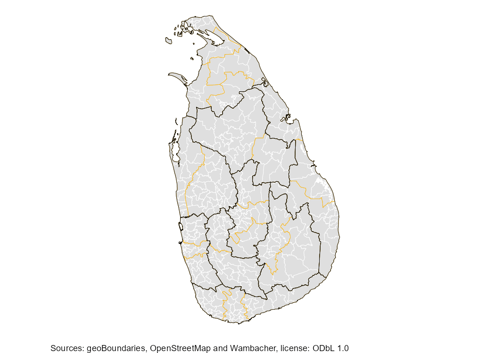

Why this package?
The geobounds package provides an R-friendly interface for downloading administrative boundaries from geoBoundaries, the Global Database of Political Administrative Boundaries. With geobounds, you can:
- Download individual country boundaries and global composite boundaries from geoBoundaries.
- Use tidyverse and sf workflows in R to map, analyze and join administrative boundaries with your own data.
- Work in an open-data context where attribution to geoBoundaries is required.
Attribution is required when sharing geoBoundaries boundaries or derived products.
Example usage
library(geobounds)
sri_lanka_adm1 <- gb_get_adm1("Sri Lanka")
sri_lanka_adm2 <- gb_get_adm2("Sri Lanka")
sri_lanka_adm3 <- gb_get_adm3("Sri Lanka")
library(ggplot2)
ggplot(sri_lanka_adm3) +
geom_sf(fill = "#DFDFDF", color = "white") +
geom_sf(data = sri_lanka_adm2, fill = NA, color = "#F0B323") +
geom_sf(data = sri_lanka_adm1, fill = NA, color = "black") +
labs(
caption = paste(
"Sources: geoBoundaries, OpenStreetMap and Wambacher,",
"license: ODbL 1.0"
)
) +
theme_void()
Documentation and resources
- Get started: choose, download and map boundaries.
- Explore metadata: availability, dates, sources, licensing and reproducibility.
- Visit the pkgdown site for full documentation: https://dieghernan.github.io/geobounds/
- Articles on geoBoundaries release types:
- Explore the geoBoundaries homepage: https://www.geoboundaries.org/
- Read the original paper describing the geoBoundaries dataset (Runfola et al. 2020).
- Report boundary data problems to geoBoundaries and package problems to geobounds. See reporting guidance.
License
The package code is MIT licensed. Downloaded data retain their own licensing terms. Always acknowledge geoBoundaries and check the boundary metadata before sharing data or figures. See sources and licenses and the package’s COPYRIGHTS file for details.
Acknowledgments
- Thanks to the geoBoundaries team and the William & Mary geoLab for creating and maintaining the dataset.
- Thanks to the R package community and all geobounds contributors.
- If you use geobounds with geoBoundaries boundaries, please cite both.
Citation
Hernangómez D (2026). geobounds: Download Administrative Boundary Data from geoBoundaries. doi:10.32614/CRAN.package.geobounds. https://dieghernan.github.io/geobounds/.
A BibTeX entry for LaTeX users:
@Manual{R-geobounds,
title = {{geobounds}: Download Administrative Boundary Data from geoBoundaries},
author = {Diego Hernangómez},
year = {2026},
version = {1.0.1},
url = {https://dieghernan.github.io/geobounds/},
abstract = {Provides tools to download individual country boundaries and global composite boundaries from geoBoundaries <https://www.geoboundaries.org/> across multiple administrative (ADM) levels. Returns boundaries as sf objects for mapping and spatial analysis. Runfola et al. (2020) <doi:10.1371/journal.pone.0231866> describe the underlying database.},
doi = {10.32614/CRAN.package.geobounds},
}